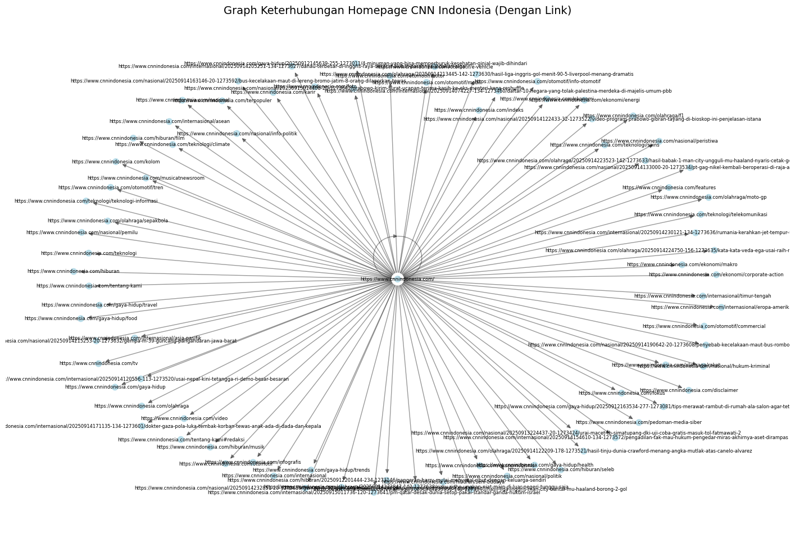

Crawling Berita www.cnnindonesia.com
import requests
from bs4 import BeautifulSoup
import pandas as pd
import time, re, sys
from google.colab import drive
drive.mount('/content/drive')
----------------------------------------------------------------
ModuleNotFoundError Traceback (most recent call last)
Cell In[2], line 1
----> 1 from google.colab import drive
2 drive.mount('/content/drive')
ModuleNotFoundError: No module named 'google.colab'
import time
import requests
import pandas as pd
from bs4 import BeautifulSoup
# fungsi ambil isi artikel (isi sendiri sesuai kebutuhanmu)
def get_article_content(url):
r = requests.get(url, headers={"User-Agent": "Mozilla/5.0"})
soup = BeautifulSoup(r.text, "html.parser")
paragraphs = soup.select("div.detail-text p")
return " ".join(p.get_text(strip=True) for p in paragraphs)
# fungsi progress bar sederhana
def print_progress(current, total):
print(f"\rHalaman {current}/{total} diproses...", end="")
def berita_cnn(pages=1, save_path="/content/drive/MyDrive/Crawling/cnnindonesia_berita.csv"):
start_time = time.time()
BASE_URL = "https://www.cnnindonesia.com/indeks?page={}"
data = {
"id_berita": [],
"judul_berita": [],
"isi_berita": [],
"kategori_berita": []
}
counter = 1 # mulai id dari 1
for page in range(1, pages+1):
url = BASE_URL.format(page)
r = requests.get(url, headers={"User-Agent": "Mozilla/5.0"})
soup = BeautifulSoup(r.text, "html.parser")
articles = soup.select("article a")
for a in articles:
link = a.get("href")
title = a.get_text(strip=True)
if not link or not title:
continue
if not link.startswith("https://www.cnnindonesia.com/"):
continue
# Ambil kategori dari URL
try:
kategori = link.split("/")[3]
except:
kategori = "unknown"
try:
content = get_article_content(link)
except:
content = ""
data["id_berita"].append(counter)
data["judul_berita"].append(title)
data["isi_berita"].append(content)
data["kategori_berita"].append(kategori)
counter += 1 # naikkan id
print_progress(page, pages)
df = pd.DataFrame(data)
df.to_csv(save_path, index=False, encoding="utf-8-sig")
end_time = time.time()
elapsed = int(end_time - start_time)
jam, sisa = divmod(elapsed, 3600)
menit, detik = divmod(sisa, 60)
print("\nSeluruh data berhasil dikumpulkan!")
print(f"Total entri: {len(df)}")
print(f"Waktu eksekusi: {jam} jam {menit} menit {detik} detik")
print(f"File disimpan di: {save_path}")
return df
# Pemanggilan
berita_path = "/content/drive/MyDrive/Crawling/cnnindonesia_berita.csv"
df_cnn = berita_cnn(pages=100, save_path=berita_path)
# Membaca kembali file
berita = pd.read_csv(berita_path, index_col="id_berita")
berita.head()
Halaman 100/100 diproses...
Seluruh data berhasil dikumpulkan!
Total entri: 1000
Waktu eksekusi: 0 jam 11 menit 1 detik
File disimpan di: /content/drive/MyDrive/Crawling/cnnindonesia_berita.csv
| judul_berita | isi_berita | kategori_berita | |
|---|---|---|---|
| id_berita | |||
| 1 | PM Qatar Desak Dunia Setop Pakai Standar Ganda... | Perdana MenteriQatarSheikh Mohammed bin Abdulr... | internasional |
| 2 | Pengadilan Tak Mau Hukum Pengedar Miras, Akhir... | Sejarah pengambilalihan aset oleh pemerintahAm... | internasional |
| 3 | Hasil Liga Inggris: Man City Bantai MU, Haalan... | Manchester Cityberhasil membantaiManchester Un... | olahraga |
| 4 | Danau Terbesar di Inggris Raya 'Sekarat' Akiba... | Danau terbesar diInggris Raya, Lough Neagh, di... | internasional |
| 5 | Rizky Ridho Ungkap Niat Main di Luar Negeri: T... | KaptenPersija Jakarta,Rizky Ridhomembuka dialo... | olahraga |
import requests
from bs4 import BeautifulSoup
import pandas as pd
import time, re, sys
web struktur#
Page & Link Output Berita
import requests
from bs4 import BeautifulSoup
import pandas as pd
import time, sys
# progress bar
def print_progress(current_page, total_pages):
percent = (current_page / total_pages) * 100
bar_length = 20
filled_length = int(bar_length * current_page // total_pages)
bar = '█' * filled_length + '-' * (bar_length - filled_length)
sys.stdout.write(f'\rPage {current_page}/{total_pages} [{bar}] {percent:.2f}%')
sys.stdout.flush()
if current_page == total_pages:
sys.stdout.write('\n\n')
# fungsi untuk kumpulkan link berita CNN Indonesia
def berita_links(pages=1, save_path="/content/drive/MyDrive/Crawling/cnnindonesia_links1.csv"):
start_time = time.time()
BASE_URL = "https://www.cnnindonesia.com/indeks?page={}"
data = {
"id_berita": [],
"page": [],
"link_keluar": []
}
counter = 1
for page in range(1, pages+1):
url = BASE_URL.format(page)
r = requests.get(url, headers={"User-Agent": "Mozilla/5.0"})
soup = BeautifulSoup(r.text, "html.parser")
articles = soup.select("article a")
for a in articles:
link = a.get("href")
if not link or not link.startswith("https://www.cnnindonesia.com/"):
continue
data["id_berita"].append(counter)
data["page"].append(url) # halaman indeks
data["link_keluar"].append(link) # link detail berita
counter += 1
print_progress(page, pages)
# simpan ke drive
df = pd.DataFrame(data)
df.to_csv(save_path, index=False, encoding="utf-8-sig")
end_time = time.time()
elapsed = int(end_time - start_time)
jam, sisa = divmod(elapsed, 3600)
menit, detik = divmod(sisa, 60)
print("\nSeluruh link berhasil dikumpulkan!")
print(f"Total entri: {len(df)}")
print(f"Waktu eksekusi: {jam} jam {menit} menit {detik} detik")
print(f"File tersimpan di: {save_path}")
return df
# contoh pemanggilan: ambil 100 halaman pertama
link_path = "/content/drive/MyDrive/Crawling/cnnindonesia_links1.csv"
df_links = berita_links(pages=100, save_path=link_path)
# baca kembali dari drive
berita_links_df = pd.read_csv(link_path, index_col="id_berita")
berita_links_df.head()
Page 100/100 [████████████████████] 100.00%
Seluruh link berhasil dikumpulkan!
Total entri: 1000
Waktu eksekusi: 0 jam 0 menit 56 detik
File tersimpan di: /content/drive/MyDrive/Crawling/cnnindonesia_links1.csv
| page | link_keluar | |
|---|---|---|
| id_berita | ||
| 1 | https://www.cnnindonesia.com/indeks?page=1 | https://www.cnnindonesia.com/internasional/202... |
| 2 | https://www.cnnindonesia.com/indeks?page=1 | https://www.cnnindonesia.com/internasional/202... |
| 3 | https://www.cnnindonesia.com/indeks?page=1 | https://www.cnnindonesia.com/olahraga/20250914... |
| 4 | https://www.cnnindonesia.com/indeks?page=1 | https://www.cnnindonesia.com/internasional/202... |
| 5 | https://www.cnnindonesia.com/indeks?page=1 | https://www.cnnindonesia.com/olahraga/20250914... |
import requests
from bs4 import BeautifulSoup
import networkx as nx
import matplotlib.pyplot as plt
# --- 1. Crawl homepage CNN Indonesia ---
BASE_URL = "https://www.cnnindonesia.com/"
r = requests.get(BASE_URL, headers={"User-Agent": "Mozilla/5.0"})
soup = BeautifulSoup(r.text, "html.parser")
# --- 2. Ambil semua link dari homepage ---
links = set()
for a in soup.find_all("a", href=True):
href = a["href"]
if href.startswith("https://www.cnnindonesia.com/"):
links.add(href)
print(f"Jumlah link unik di homepage: {len(links)}")
# --- 3. Bangun graph keterhubungan ---
G = nx.DiGraph()
# Tambahkan edge: homepage -> link
for link in links:
G.add_edge(BASE_URL, link)
# --- 4. Hitung PageRank ---
pagerank_scores = nx.pagerank(G, alpha=0.85)
# --- 5. Visualisasi graph ---
plt.figure(figsize=(18, 12))
pos = nx.spring_layout(G, k=0.4, seed=42)
# gambar edge
nx.draw_networkx_edges(G, pos, alpha=0.4, arrows=True)
# gambar node: ukuran sesuai PageRank
nx.draw_networkx_nodes(
G, pos,
node_size=[v * 5000 for v in pagerank_scores.values()],
node_color="lightblue",
alpha=0.8
)
# gambar label: tuliskan URL node
nx.draw_networkx_labels(
G, pos,
labels={n: n for n in G.nodes()}, # full link
font_size=6
)
plt.title("Graph Keterhubungan Homepage CNN Indonesia (Dengan Link)", fontsize=14)
plt.axis("off")
plt.show()
Jumlah link unik di homepage: 84
